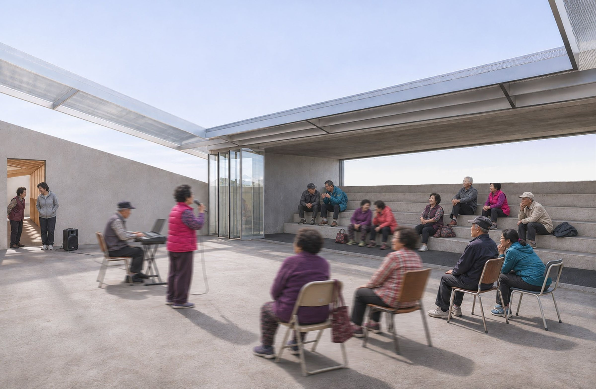
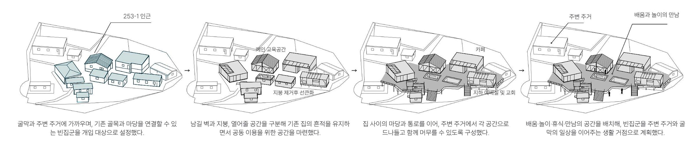
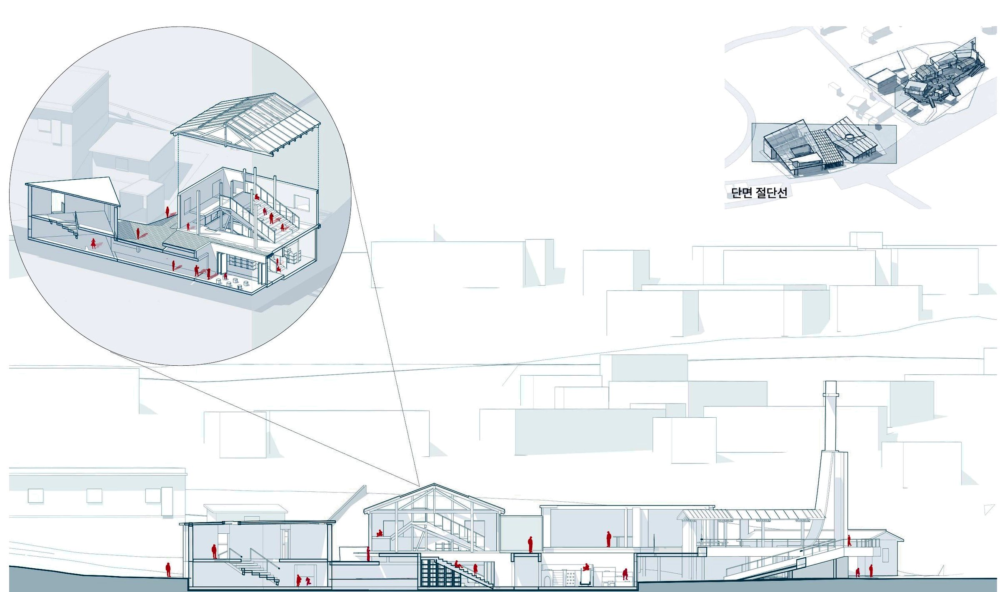
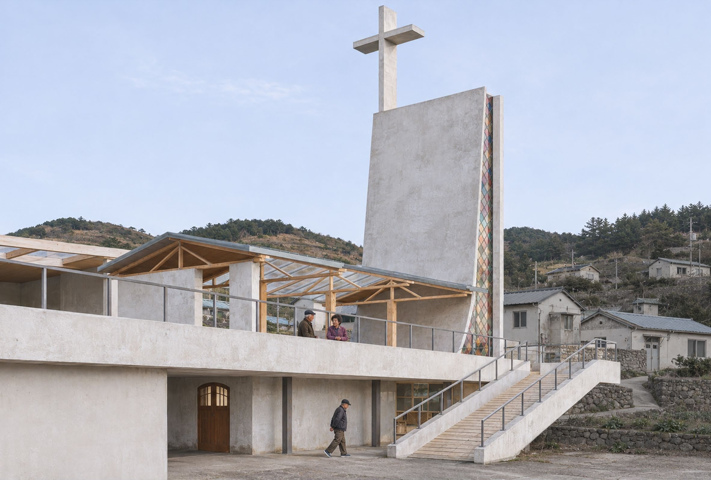
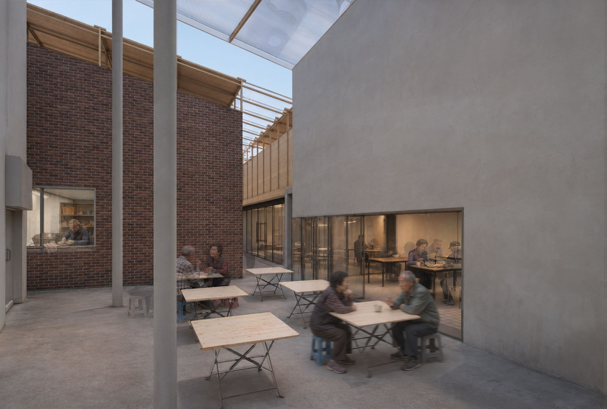
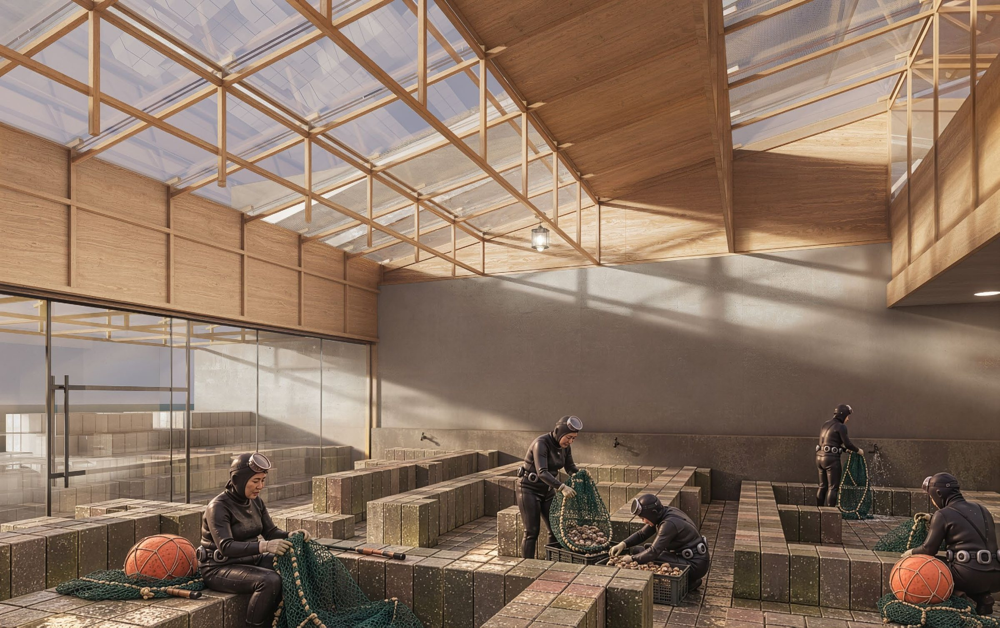

비어가는 마을사라진 것들이 들어오는 집
- Location
- 전라남도 고흥군 포두면 오취마을
- Year
- 2026
- Type
- 공모전 — 빈집 · 어촌 재생
- Team
- 팀
비어가는 마을, 사라진 것들이 들어오는 집
전라남도 고흥군 포두면 오취마을은 바다와 주거, 공동노동이 밀접하게 연결된 어촌마을이다. 그러나 인구 감소와 고령화로 인해 마을 곳곳에 빈집이 발생하고, 주민들이 함께 일하고 생활하던 관계 역시 변화하고 있다.
본 계획은 새로운 인구를 유입시켜 마을을 활성화하는 방식보다, 남아 있는 주민들이 어떻게 함께 살아갈 수 있는가에 주목했다. 해안의 굴막과 마을의 빈집을 공동노동과 생활문화의 거점으로 재구성하고, 노동·배움·휴식이 일상 속에서 자연스럽게 이어지는 새로운 문화공간을 제안했다.


생활문화의 거점 — 빈집
기존 주택의 벽과 경계를 선택적으로 열어 공동의 마당을 형성했다. 노동의 경험이 배움과 제작, 나눔과 휴식으로 확장되는 장소이다.

공동노동의 거점 — 굴막
굴 작업을 위한 공간과 작업 사이의 휴식, 교류가 공존하는 장소로 계획했다. 함께 일하는 시간이 마을의 관계를 이어가는 기반이 된다.

바람 · 시선 · 마을
01 바람 — 해측 처마를 낮게. 해측 지붕을 지면 가까이까지 낮추면 바람을 받아내는 대신 흘려보내게 되고, 들리는 힘이 집중되는 지점 자체가 사라진다.
02 시선 — 하늘을 자르고 바다를 남긴다. 처마를 앉은 눈높이 가까이 낮춰 하늘을 가리면, 시야에는 수평선 아래의 바다만 남는다. 일하는 자세에서 눈이 편한 범위만 열어두는 방식이다.
03 마을 — 기존 지붕선의 연장. 새로 얹는 지붕은 마을에 없던 형태를 만들지 않고, 그 경사와 높이를 이어받는다.




